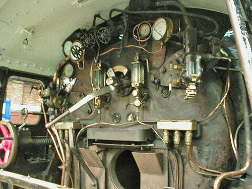

Locomotive à vapeur
La chaudière
La chaudière se compose de la partie postérieure, du corps cylindrique et de la boîte à fumée.
- La partie postérieure de la chaudière se compose du foyer et de la boîte à feu, reliés par des entretoises.
- Le corps cylindrique renferme les tubes à fumée.
Le combustible - charbon, bois ou pétrole - alimente le feu par la porte du foyer, où il brûle sur la grille (pour les combustibles solides). Une alimentation semi-automatique peut se faire par un stoker. Les cendres et mâchefer s'accumulent plus bas dans le cendrier. L'air, nécessaire à la combustion, entre par des clapets situés au niveau de la grille : les registres. La voûte du foyer force la circulation des gaz chauds dans l'ensemble du foyer et limite l'entrée des flammèches dans les tubes. Les gaz résultants de la combustion passent au travers des tubes à fumée, où ils transmettent leur chaleur à l'eau de la chaudière et arrivent à la boîte à fumée, dans laquelle un pare-escarbilles retient les cendres incandescentes, avant d'être expulsés par la cheminée à l'aide de l'échappement des cylindres. Le sommet du foyer (ciel du foyer), porté à haute température, est recouvert par une partie de la chaudière qui doit toujours être alimentée en eau à cet endroit, sinon des fusibles de sûreté fondent et le mélange vapeur/eau est précipité dans le foyer pour l'éteindre.
L'équipe
L'équipe de conduite comporte le chauffeur et le mécanicien. Le premier est chargé de la production de vapeur, de l'alimentation du foyer et de l'alimentation en eau ; l'autre est chargé de la conduite de la machine elle-même, de la surveillance de la voie et des signaux, et de la « tenue de l'heure ». L'équipe se tenait dans l'« abri », face à la « devanture » constituée par la face arrière du foyer, en quelque sorte, le tableau de bord de la machine. Sur certaines machines, la plateforme de conduite peut être distincte de la plateforme du chauffeur (comme sur les Camelback (en)), pour donner une bonne visibilité au mécanicien.
Jusqu'à l'existence de machines banalisées (comme les 141 R), une équipe reste liée à sa machine, sur une certaine période entre révisions.
Vitesse
Le record de vitesse mondial pour un train tracté par une locomotive à vapeur est détenu par une locomotive de la famille des Pacific A4, du LNER, au Royaume-Uni : la Mallard, tractant six voitures et une voiture dynamométrique, à 203 km/h, sur une voie descendant légèrement de Stoke Bank, le 3 juillet 1938. Comme d'autres locomotives (allemandes, américaines ou belge) ne se sont seulement qu'approchées de ce record, il est considéré comme constituant la limite pour un train tracté à la vapeur.
Le moteur à vapeur (distribution et entraînement)

L'arrivée et l'échappement de la vapeur, des deux côtés du cylindre, est réglée par le tiroir de distribution (6). Le piston est relié à la crosse qui, par l'intermédiaire de la bielle motrice, transforme le mouvement de va-et-vient en un mouvement circulaire. Ce mouvement est transmis à toutes les roues motrices, grâce aux bielles d'accouplement. Le réglage du tiroir de distribution, pour inverser la marche, s'effectue au moyen du volant de commande de la vis de changement de marche (8), qui se trouve dans la cabine de conduite.
Travail de la distribution (exemple de distribution Walschaerts) : c'est par le tiroir (6) que la vapeur est admise dans le cylindre (7) et agit alternativement sur chacune des faces du piston. La tige de piston actionne la bielle couplée au train de roues motrices, par l'intermédiaire de la crosse articulée (5). Les roues couplées deviennent toutes motrices.
Par l'intermédiaire de la contre-manivelle (2) calée à 90° de la manivelle motrice, une bielle fait osciller la coulisse (1) de distribution dans laquelle glisse la bielle de commande de tiroir (3). Le déplacement de cette bielle (3), couplée au levier d'avance (4) sur la coulisse, permet de régler le décalage entre les déplacements du tiroir et ceux du piston. On peut ainsi régler le taux d'admission du moteur et également changer de sens.
Les premières locomotives, au XIXe siècle, sont mues par une machine à vapeur, d'où le nom de locomotives à vapeur. Ce type de moteur thermique est le plus couramment utilisé jusque dans les années 1950 entre autres en Europe, et est toujours employé localement dans certains pays au XXIe siècle.
Désormais, la plupart des trains sont cependant tractés par des locomotives électriques ou thermiques (Diesel), ou bien sont constitués par des rames automotrices, ou des autorails, parfois indivisibles, intégrant la motorisation répartie sous les véhicules et/ou à l'intérieur des caisses.
Source : Wikipedia